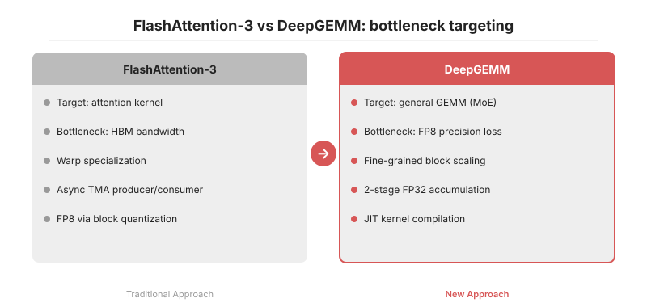
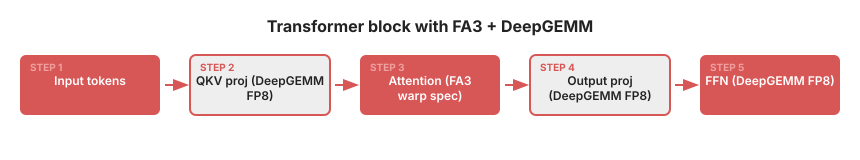

H100 세대의 모델 서빙 최적화는 크게 두 갈래로 나뉩니다. FlashAttention-3는 어텐션의 O(N²) 메모리 폭발을 IO-aware 타일링과 warp specialization으로 해결하고, DeepGEMM은 FP8 GEMM의 수치 손실을 fine-grained scaling과 2단계 FP32 누산으로 복구합니다. 둘 다 wgmma와 TMA 같은 Hopper 전용 명령어를 사용하지만 공략 지점은 정반대입니다. 전자는 HBM↔SRAM 대역폭을, 후자는 FP8 정밀도 손실을 공격합니다. 서빙 스택에서는 경쟁 관계가 아니라 보완 관계이며, 어텐션은 FA3, QKV·FFN GEMM은 DeepGEMM으로 교차 배치하는 조합이 자연스럽습니다.
H100 세대의 LLM 서빙에서 GPU time을 차지하는 지점은 크게 두 군데입니다. 첫째는 어텐션의 O(N²) 메모리 폭발입니다. 시퀀스 길이가 32K, 64K로 늘어나면 N×N attention matrix를 HBM에 그대로 올리는 것만으로도 대역폭 예산을 모두 소모합니다. 둘째는 GEMM의 정밀도-throughput 트레이드오프입니다. MoE 구조에서 FFN·router GEMM은 토큰마다 빈번하게 호출되며, BF16은 throughput이 부족하고 FP8은 정확도 손실이 발생합니다.
FlashAttention-3와 DeepGEMM은 모두 H100(sm_90a)의 wgmma(Warp-Group MMA)와 TMA(Tensor Memory Accelerator)를 적극 활용합니다. 공통 기반이지만, 두 라이브러리가 이 명령어들을 쓰는 전략은 정확히 반대 방향을 향합니다. 전자는 메모리 이동을 숨기는 데 집중하고, 후자는 FP8 수치를 보존하는 데 집중합니다.
FlashAttention-3(2024, Dao et al.)은 어텐션의 IO-aware 타일링을 H100용으로 재설계한 버전입니다. FA2가 단일 warp 안에서 load → compute → store를 순차 실행했다면, FA3는 warp를 producer와 consumer로 분할합니다.
wgmma로 QKᵀ·AV matmul을 수행하고, 사이사이 CUDA core로 softmax를 계산합니다.두 그룹이 서로 다른 파이프라인 스테이지에서 동시에 동작하므로, HBM 왕복 지연이 compute 시간과 거의 완전히 겹칩니다. FA2에서 직렬화되어 있던 I/O 버블이 사라지는 구조입니다.
여기에 FP8 경로에서는 softmax의 dynamic range 문제를 block-wise quantization과 non-coherent transform(학습에서 가져온 Hadamard-like rotation)으로 완화하여, outlier가 스케일을 왜곡하는 것을 방지합니다. 논문 실측치 기준 H100 SXM에서 BF16 어텐션은 약 740 TFLOPs(이론 peak의 약 75%), FP8은 약 1.2 PFLOPs에 도달합니다. FA2가 H100의 약 35%만 활용하던 것과 비교하면, 하드웨어 활용률이 약 2배로 증가합니다.
DeepGEMM(2025, DeepSeek)은 접근 자체가 다릅니다. 타깃은 어텐션이 아니라 일반 GEMM, 특히 MoE FFN의 grouped matmul입니다. 여기서 가장 큰 페인포인트는 FP8의 수치 손실입니다. 텐서 전체를 단일 scale로 양자화하면 outlier 하나가 scale을 넓혀 나머지 값의 유효 bit를 잠식합니다.
DeepGEMM의 해법은 fine-grained scaling입니다.
1×128 블록 단위로, weight는 128×128 블록 단위로 각자의 FP8 scale을 가집니다.wgmma의 FP8 accumulate 결과를 일정 주기마다 FP32 누산기로 내려 2단계 accumulation을 수행합니다.또 한 가지 설계 포인트는 JIT compilation입니다. 커널을 미리 빌드된 바이너리로 배포하지 않고, M/N/K와 MoE 그룹 크기를 런타임에 확인해 Ninja로 빌드합니다. 이로써 코어 구현은 수백 줄 수준으로 작고, shape 특화 최적화가 자연스럽게 반영됩니다. DeepSeek이 공개한 벤치마크 기준, H800에서 FP8 GEMM이 약 1550 TFLOPs에 도달하여 cuBLAS 기반 FP8 경로 대비 약 1.5~2배 수준의 throughput을 보입니다(H800은 sm_90a로 H100과 동일한 Tensor Core 구성을 가지며, 차이는 주로 NVLink 대역폭에 있습니다). 최근 릴리스에서는 SM100(Blackwell) 경로도 추가되었습니다.
두 라이브러리의 공략 지점을 요약하면 다음과 같습니다.
HBM ↔ SRAM 대역폭을 warp specialization과 async TMA로 은닉합니다.FP8 양자화 손실을 블록 단위 scale과 FP32 두 단계 누산으로 복구합니다.양쪽 모두 wgmma를 사용하지만, FA3는 이 명령어를 latency hiding 도구로, DeepGEMM은 precision-preserving 연산 단위로 활용합니다.
실무에서 두 라이브러리는 경쟁 관계가 아니라 보완 관계입니다. Transformer 한 블록 내부를 보면 다음과 같은 배치가 가능합니다.
Input → QKV Projection (GEMM) → Attention → Output Projection (GEMM) → FFN (GEMM)
↑ ↑ ↑ ↑
DeepGEMM FP8 FA3 kernel DeepGEMM FP8 DeepGEMM FP8
어텐션 블록은 FA3로, 앞뒤의 projection과 FFN GEMM은 DeepGEMM으로 배치하면 서빙 경로 전반에서 서로 다른 병목이 분산됩니다. vLLM의 custom attention backend나 SGLang의 kernel registry에 이 조합을 endpoint 단위로 통합하는 PR이 최근 증가하고 있습니다.
실제 서빙 코드 상에서는 대략 다음과 같은 형태가 됩니다.
# 의사 코드: Hopper 전용 분기에서 FA3 + DeepGEMM 활성화
from flash_attn_interface import flash_attn_func # FA3 경로
import deep_gemm
def hopper_forward(x, qkv_w, out_w, ffn_w, scales):
# 1) QKV projection — DeepGEMM FP8 GEMM (fine-grained scaling)
qkv = deep_gemm.gemm_fp8_fp8_bf16_nt(
x, qkv_w, scales.x, scales.qkv_w # 1×128 / 128×128 scales
)
q, k, v = qkv.chunk(3, dim=-1)
# 2) Attention — FlashAttention-3 kernel (warp specialization + TMA)
o = flash_attn_func(q, k, v, causal=True, softmax_scale=scale)
# 3) Output + FFN — 다시 DeepGEMM으로 FP8 GEMM
o = deep_gemm.gemm_fp8_fp8_bf16_nt(o, out_w, scales.o, scales.out_w)
return deep_gemm.gemm_fp8_fp8_bf16_nt(o, ffn_w, scales.post_attn, scales.ffn_w)
실제 vLLM PR을 보면 이 스위칭을 torch.cuda.get_device_capability() == (9, 0) 조건 아래에서 분기하고, Ampere 이하에서는 기존 FA2 + cuBLAS 경로로 fallback하는 방식을 사용합니다.


1. Hopper 한정: 두 라이브러리 모두 sm_90a의 wgmma·TMA에 하드 의존합니다. A100(sm_80)이나 그 이전 세대에서는 동작하지 않으므로 기존 FA2 + cuBLAS 경로를 그대로 유지해야 합니다.
2. FP8 정확도 교차 검증: DeepGEMM의 fine-grained scaling을 사용하더라도 PPL이 미세하게 변동할 수 있습니다. 특히 RLHF로 튜닝된 모델은 활성 분포가 민감하므로, downstream eval(MT-Bench, HumanEval 등)로 반드시 교차 확인이 필요합니다.
3. JIT warm-up: DeepGEMM은 첫 호출 시 Ninja 컴파일로 shape당 수 초(관찰 범위 5~15초) 지연이 발생합니다. 서빙 시작 직후 대표 shape 세트에 대한 warm-up GEMM 루프를 한 번 실행하지 않으면 p99 latency가 악화됩니다.
4. MoE 특화 여부: DeepGEMM의 grouped GEMM 최적화는 MoE를 전제로 합니다. Mistral 7B 같은 dense 모델에서는 이점이 감소하므로 cuBLAS FP8·Transformer Engine과 실측 비교가 필요합니다.
5. TE와의 역할 분담: NVIDIA Transformer Engine(TE)도 FP8 GEMM을 제공하지만 scaling granularity는 텐서 단위에 가깝습니다. MoE·long-context 워크로드에서는 DeepGEMM의 블록 단위 scaling이 유리한 편이며, dense·표준 transformer에서는 TE가 더 안정적인 선택지로 판단됩니다.
H100의 FP8 이론 peak(SXM5 기준 약 1979 TFLOPs)는 실사용에서 도달하기 어렵습니다. FA3와 DeepGEMM은 이 peak에 접근하는 두 가지 서로 다른 경로입니다. 한쪽은 메모리 이동을 은닉하고, 다른 한쪽은 수치 정밀도를 보존하는 방식을 취합니다. 서빙 엔지니어 입장에서 둘 중 하나만 선택하는 것은 올바른 질문이 아닙니다. 두 경로는 동일한 목표(이론 peak 활용률 극대화)를 향합니다.